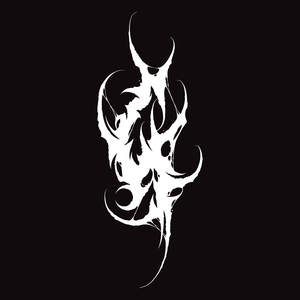

Trade Mark Journal No.2025/015 11 April 2025
UK00004181339 29 March 2025 (16,42)

- Class 16
- Graphic art reproductions; Graphic art prints; Graphic art books; Graphic reproductions; Reproductions (Graphic -); Graphic drawings; Graphic prints; Printed art reproductions; Art prints; Art pictures; Art etchings; Reproductions of paintings; Paintings [pictures], framed or unframed; Fine art prints; Paintings; Watercolor paintings; Decoration and art materials and media; Art paper; Graphic prints and representations; Works of art of paper; Watercolors [paintings]; Lithographic works of art; Cartoon prints; Watercolour paintings; Printed visuals; Works of art and figurines of paper and cardboard, and architects' models; Paintings and calligraphic works; Painting books; Photographic or art mounts; Watercolours [finished paintings]; Painting sets for artists; Watercolours [paintings]; Watercolor pictures; Photographs [printed]; Printed photographs; Drawings; Photo prints; 3D wall art made of card; 3D wall art made of paper; Prints in the nature of pictures; Photograph album pages; Engravings [prints]; Prints [engravings]; Works of art made of paper; Collages; Canvas panels for artists; Papers for painting and calligraphy; Pictorial prints; Art mounts; Canvas prints; Materials for artists; Photograph albums; Poster books; Saucers (Watercolor [watercolour] -) for artists; Watercolor [watercolour] saucers for artists; Canvas for painting; Painting canvas; Printed music books; Painting pencils; Embroidery design patterns; Graphic representations.
- Class 42
- Design of artwork; Graphic art design; Art work design; Design services for art-work; Graphic art services; Design of sculptures; Industrial and graphic art design; Commercial art design; Graphic illustration design; Graphic design of promotional materials; Graphic illustration design services; Industrial art design; Design (Graphic arts -); Graphic arts design; Design of audio-visual creative works; Design of logos for t-shirts; Graphic design; Design of printed material; Design services relating to artwork; Design of post card cartoon characters; Authenticating works of art; Works of art (Authenticating -); Packaging designs; Graphic design services; Graphic designing; Design and graphic arts design for the creation of web sites; Computer aided graphic design; Visual design; Design of graphic software systems; Graphic arts designing; Designing (Graphic arts -); Computer-aided design of video graphics; Services of a graphic designer; Design and graphic arts design for the creation of web pages on the Internet; Design of typefaces; Architectural design; Illustration services (design); Interior design; Computer graphic design for video projection mapping; Brochure design; Design of stationery; Engineering design; Fashion design; Design of packaging; Packaging design; Technical design; Design of ornamental layouts; Computer design; Design of software; Software design; Website design; Computer graphics design services; Logo design services; Product design; Industrial design; Design (Industrial -); Computer-aided industrial design; Styling [industrial design]; Design of clothing; Architectural design for interior decoration; Illustrating services (design); Design of interior decoration; Preparation of reports relating to graphic arts design; Hardware design; Commercial interior design; Construction design; Pattern design; Design of websites; Design of furnishings; Design consultancy; Computer website design; Platforms for graphic design as software as a service [SaaS]; Design of furniture; Furniture design; Jewelry design; Computer-aided engineering design and drawing services; Interior design services; Automotive design; Website design and development; Computer specification design; Design of prototypes; Tool design; Design of costumes; Animation design for others; Design of games; Architectural design for exterior decoration; Design of interior decor; Decor (Design of interior -); Interior decor design; Architectural design services; Interior decorating design; Design, drawing and commissioned writing of computer software; Urban design; Landscape lighting design; Design of tools; Preparation of architectural design; Design of jewellery; Website design consultancy; Engineering design and consultancy; Textile design services; Shop interior design; Design of engineering products; Computer site design; Analysis of product design; Design of products; Design of signs; Software as a service [SaaS] featuring software platforms for graphic design; Design of models; Design planning; Design services for architecture; Architecture design services; Design of graphics and of livery for corporate identity; Dress design; Design of computers; Computer-aided engineering design services; Design services relating to window graphics; Software design and development; Design and development of multimedia products; Graphic design for the compilation of web pages on the internet; Design and development of computer hardware architecture; Packaging design services; Design services (Packaging -); Design services for packaging; Design and development of computer software architecture; Computer design research; Product design and development; Design of headgear; Graphic illustration services for others; Customized design of computer hardware; Toy design; Hat design.
Aidan J Saunders